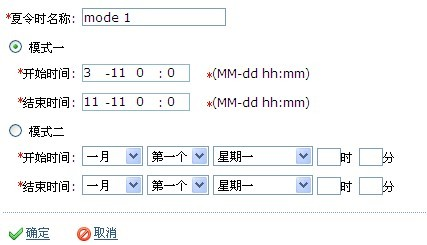

夏令时
夏令时，又称 "日光节约时制"，是一种为节约能源而人为规定地方时间的制度，在这一制度实行期间所采用的统一时间称为 "夏令时"。
1.新增夏令时
模式一：
按月-日-时-分设置，有开始时间和结束时间。如开始时间可设置为 "3-11 0:0"，到夏令时开始时间，系统时间会快一个小时；到夏令时结束时间，系统时间调回标准时间。

模式二：
按 X 月第 X 个星期 X，X 时 X 分设置，有开始时间和结束时间。如开始时间可设置为 "三月第二个星期一，0时0分"，到夏令时开始时 间，系统时间会快一个小时；到夏令时结束时间，系统时间会调回标准时间。

2.夏令时的使用
用户可以将夏令时设置到某个设备上生效，有两种方法：
一是在界面勾选一个夏令时设置，点击 "设置夏令时"，选择需要设置夏令时的设备，点击确定完成设置。
或者在门禁-门设置界面，选择某个设备，进行夏令时的启用/禁止操作。
如果该夏令时已被使用，则会将新修改的夏令时发送到设备中，如果设备断开导致发送失败，则会在下次连接上之后继续发送。
在门禁应用下的门管理模块中可启用和禁用夏令时，启用后到所启用的夏令时的开始时间，系统会快一个小时，到结束时间，系统会调回 标准时间。如果设备未设置过夏令时，则禁用时会提示 "该设备未设置夏令时！"。
注意：如果夏令时正在使用，则不能删除，需先禁用该夏令时，再执行删除操作。